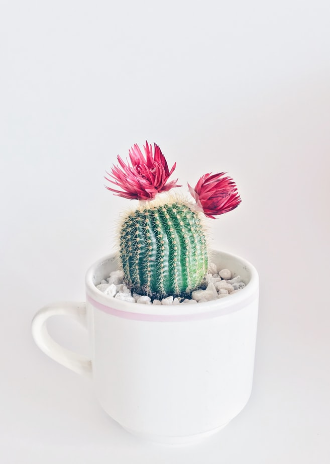
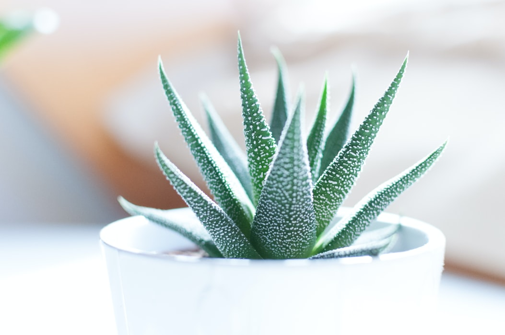
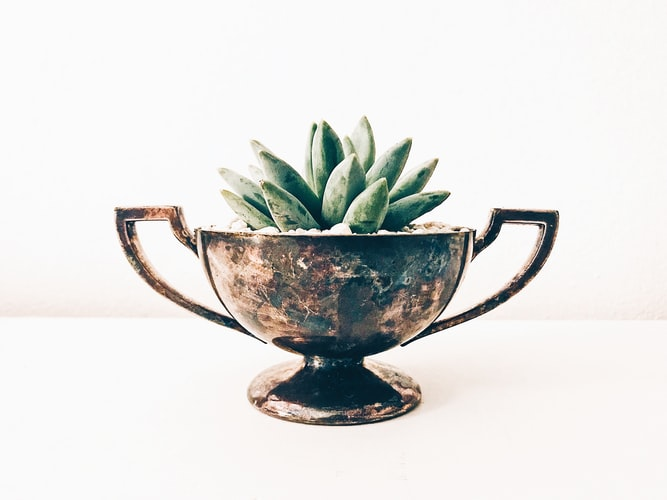
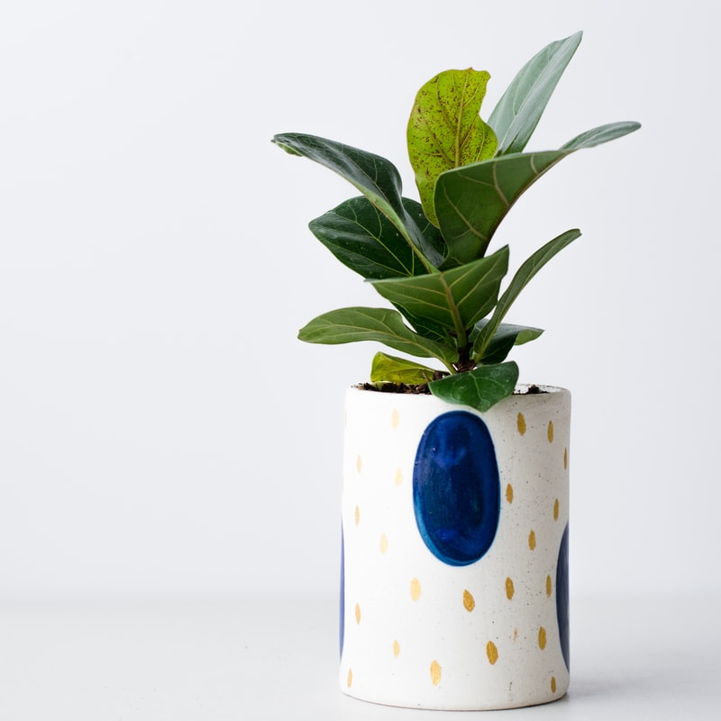

|  | CACTUS Light: be placed in the light but not in direct sunlight. Water: it is watered very rarely, about once a month Fertilizer: the recommended one is the special fertilizer, cactus, liquid fertilizer that is administered once a month from September-March and from April-August, once every 10-14 days. 8$ |
| ALOE VERA This plant needs very little care. Aloe vera withstands dry weather very well. The plant should be watered well occasionally, and then allowed to dry. It is much better for the plant than to give it a little water regularly. It is important that the water can drain and not stay on the bottom of the pot. This houseplant likes a lot of light and can even stand to be placed in direct sunlight. 10$ |
 |
 |
PHLEBODIUM AUREUM 'BLUE STAR' Blue-gray leaves. In addition, it purifies the air. The 'Blue Star' leaves go in all directions. This gives it a fantastic look! The capricious plant is easy to care for. Always keep the soil in the pot moist, without letting the plant stay in the water. Place the plant totally or partially in the shade. Take a deep breath! 13$ |
| ECHEVERIA AGAVOIDES Echeveria agavoides is a very balanced plant! The leaves are arranged evenly around the heart of the plant. The light green color with red edges produces a good mood effect! Succulents need very little care. 13$ |
 |
|  | FICUS LYRATA Fiddle-leaf fig or Ficus lyrata has its name derived from the resemblance of the leaves to a violin (fiddle). Originally from the African rainforests, this ficus is an amazing decorative plant due to its unique, easily recognizable foliage. It loves light and needs to be rotated every few weeks to grow in a balanced way 10$ |